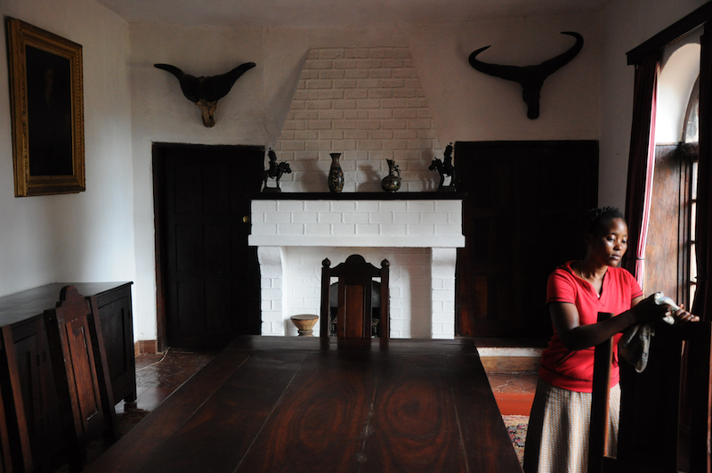
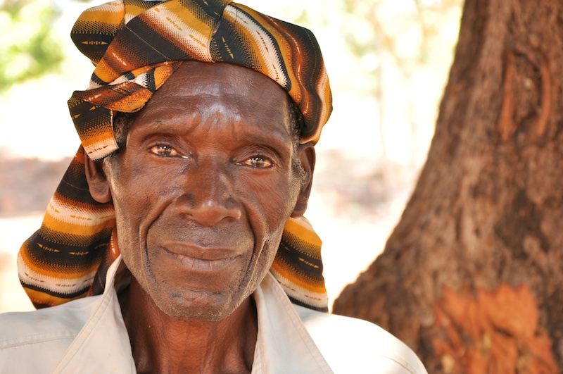
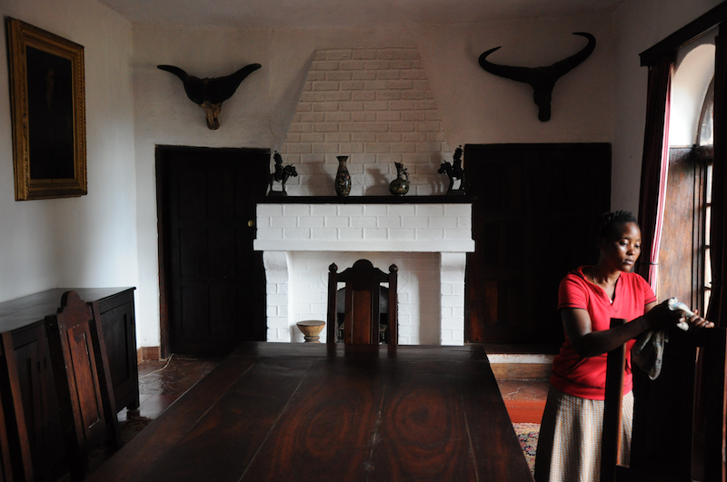
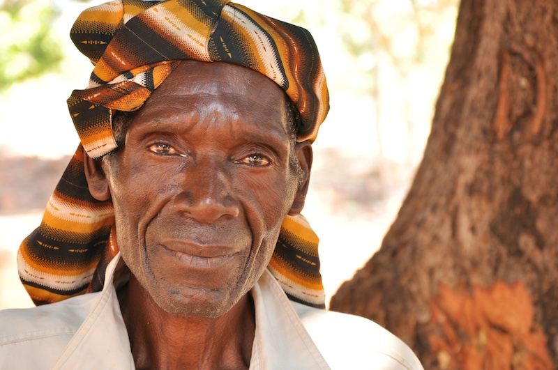
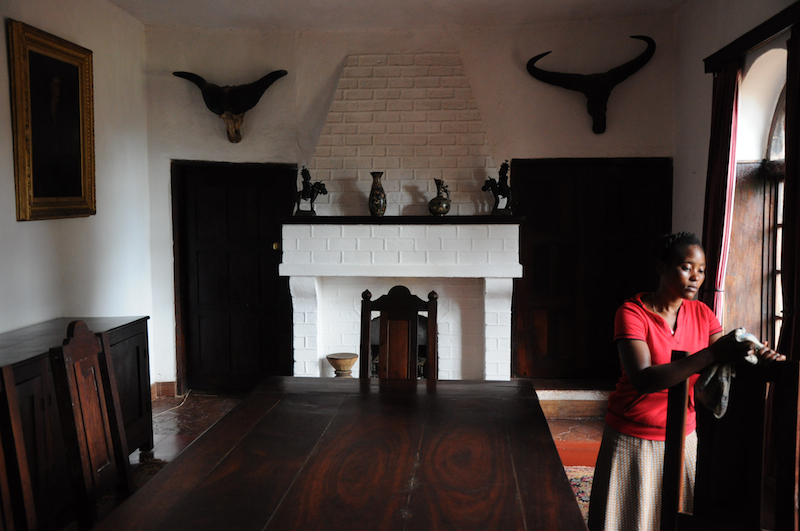
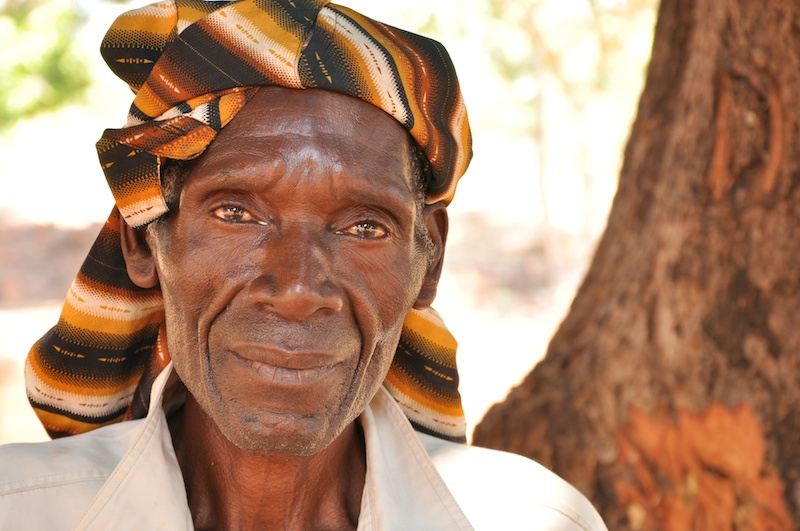
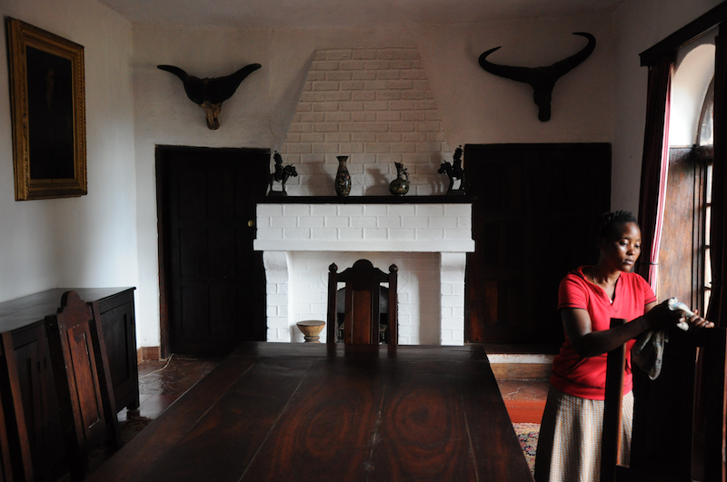
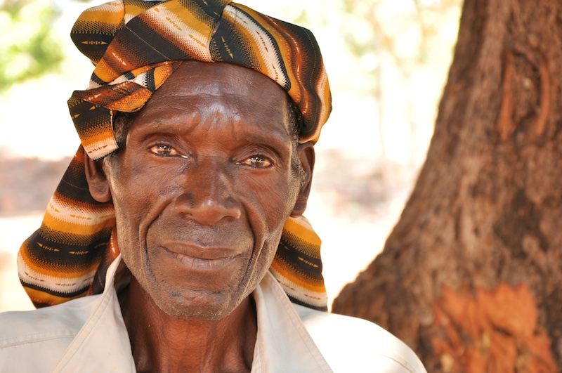

 



I am a documentary maker and photographer whose main interest is in peace in war and land rights. I frequently work for the NHS, mostly at Great Ormond Street Hospital for Children and for NGOs. I also shoot for television including on hit series Forbidden History.
I am currently working on a project about Ibrahim Abu El Hawa, a global peace ambassador born in East Jerusalem into the maelstrom of Israeli independence. The documentary will be completed in a couple of years time, depending on events on the ground. Through visiting the region as the 2014 summer conflict was starting to cease, I saw many sides to Palestine and Israel and myriad amount of issues surrounding the conflict is incomprehensible to the outsider. My aim therefore is to tell stories about individuals who fight for a better world for Muslims, Jews, Christians and anyone else who inhabits the holy land.